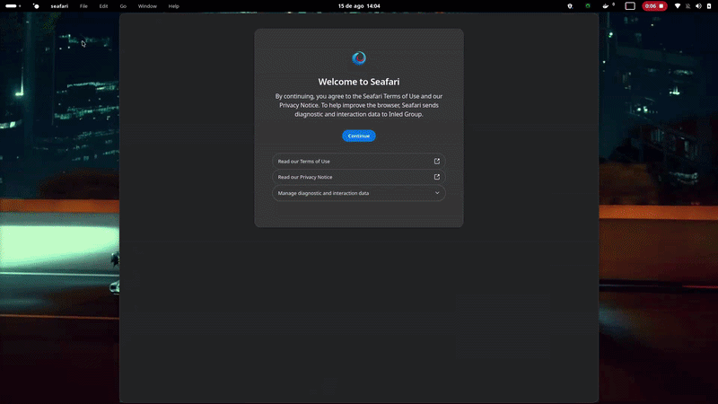

Native Left Traffic Lights
Close, minimize, and zoom controls anchored on the left in authentic macOS order with triad hover glyphs and click rings.
The authentic macOS Safari desktop experience ported to Windows 10 & 11. Liquid glass tabs, left-hand traffic lights, and pure Gecko browsing freedom.

Not an imitation stylesheet. A fully integrated Windows 64-bit release layer with deep Win32 shell adaptations.
Close, minimize, and zoom controls anchored on the left in authentic macOS order with triad hover glyphs and click rings.
Powered by Firefox Gecko. Full ad-blocker capability, multi-account container tabs, and genuine uBlock Origin tracker protection.
Emulates macOS power savings: 1Hz background timer throttling, idle heap compaction, and automatic memory discarding for inactive tabs.
Patched PE metadata and AppUserModelID: Windows Taskbar, Task Manager, and Alt+Tab cleanly identify it as Seafari.
Native C-based installer engine with multi-threaded Deflate decompression executing full setup in under 400 milliseconds.
GitHub Actions pipeline tracks the latest Firefox releases and upstream InledGroup/seafari commits daily with zero latency.